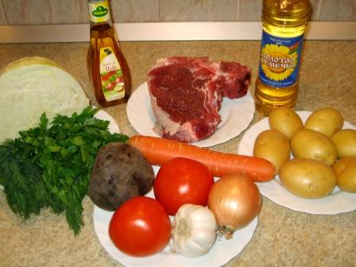
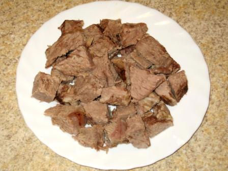
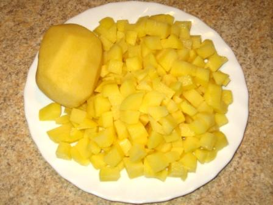
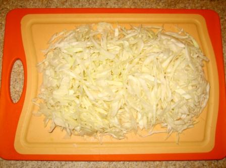
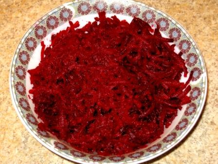
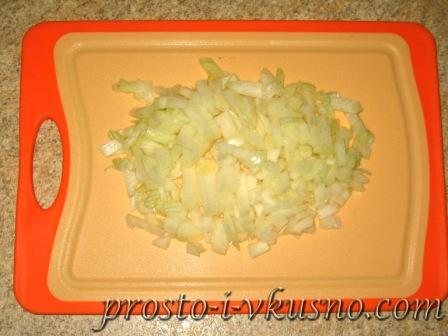
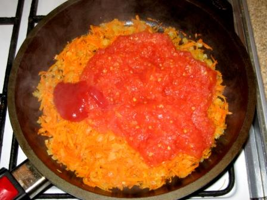
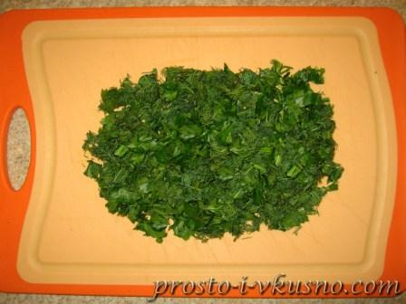
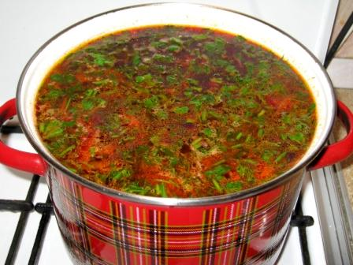
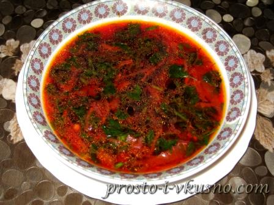

Prepare all to cook
Boil meat and make a broth
Chop potatoes and put all to the broth
Chop cabbage and put all to the broth
Grate a beetroot and carrot
Chop onions
Fry carrot, onions with tomatoes and tomatoe sovce. After 10 min put beatroots and frie for 10 more min. After put all to pot.
Cut parsley
Put parsley inside. Looks delisious!
Ready to serve with sour cream
